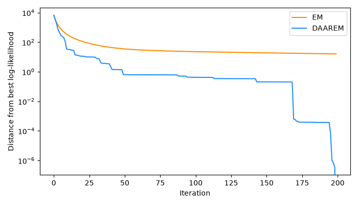

Note
Go to the end to download the full example code.
Accelerate a simple EM algorithm with DAAREM#
This example demonstrates amica.optim.AndersonEMAccelerator on a
small mixture-proportion maximum-likelihood problem. It is adapted from the
Stephens Lab DAAREM mixture EM tutorial:
https://stephenslab.github.io/daarem/mixem.html
To use DAAREM acceleration in AMICA, pass optimizer=”daarem” to the AMICA constructor.
import matplotlib.pyplot as plt
import numpy as np
import rdata
import torch
from amica.optim import AndersonEMAccelerator
from amica.utils import fetch_daarem_mixdata
def load_reference_likelihood_matrix():
"""Load the original Stephens Lab tutorial likelihood matrix."""
data_path = fetch_daarem_mixdata()
return np.asarray(rdata.read_rda(data_path)["L"], dtype=np.float64)
def project_simplex(x):
"""Project an iterate onto the probability simplex."""
x = np.maximum(np.asarray(x, dtype=np.float64), 0.0)
total = x.sum()
if total == 0:
return np.full_like(x, 1.0 / x.size)
return x / total
def mixem_update(L, x, eps=1e-15):
"""Perform one EM update for mixture proportions."""
row_eps = eps * L.max(axis=1)
posterior = L * x + row_eps[:, None]
posterior = posterior / posterior.sum(axis=1, keepdims=True)
return posterior.mean(axis=0)
def mixobjective(L, x, eps=1e-15):
"""Evaluate the mixture log-likelihood."""
return np.log(L @ x + eps * L.max(axis=1)).sum()
def fit_em(L, x0, n_iter):
"""Run plain EM for a fixed number of iterations."""
x = x0.copy()
values = []
for _ in range(n_iter):
x = mixem_update(L, x)
values.append(mixobjective(L, x))
return x, np.asarray(values)
def fit_daarem(L, x0, n_iter, order=5):
"""Run DAAREM-style acceleration over consecutive EM updates."""
accelerator = AndersonEMAccelerator(
order=order,
monotone=True,
epsilon_monotone=.01,
)
x = mixem_update(L, x0)
values = [mixobjective(L, x)]
accelerator.update(
x=torch.as_tensor(x0, dtype=torch.float64),
g=torch.as_tensor(x, dtype=torch.float64),
)
for _ in range(1, n_iter):
plain = mixem_update(L, project_simplex(x))
plain_value = mixobjective(L, plain)
accelerator.update(
x=torch.as_tensor(project_simplex(x), dtype=torch.float64),
g=torch.as_tensor(plain, dtype=torch.float64),
)
proposal = accelerator.propose()
if proposal is not None:
candidate = project_simplex(proposal.candidate.numpy())
candidate_value = mixobjective(L, candidate)
if candidate_value >= plain_value:
x = candidate
values.append(candidate_value)
accelerator.accept()
accelerator.update_cycle_monotonicity(
loglik=candidate_value,
history=proposal.history,
)
continue
accelerator.update_cycle_monotonicity(
loglik=plain_value,
history=proposal.history,
)
accelerator.reject()
x = plain
values.append(plain_value)
return project_simplex(x), np.asarray(values)
Set up a deterministic mixture problem.#
0%| | 0.00/6.86M [00:00<?, ?B/s]
85%|███████████████████████████████▌ | 5.85M/6.86M [00:00<00:00, 58.5MB/s]
0%| | 0.00/6.86M [00:00<?, ?B/s]
100%|█████████████████████████████████████| 6.86M/6.86M [00:00<00:00, 30.2GB/s]
Compare plain EM and DAAREM.#
em_weights, em_values = fit_em(L, x0, n_iter=n_iter)
daarem_weights, daarem_values = fit_daarem(L, x0, n_iter=n_iter, order=5)
print(f"EM final log-likelihood: {em_values[-1]:.6f}")
print(f"DAAREM final log-likelihood: {daarem_values[-1]:.6f}")
print(f"Improvement: {daarem_values[-1] - em_values[-1]:.6f}")
np.testing.assert_allclose(em_weights.sum(), 1.0)
np.testing.assert_allclose(daarem_weights.sum(), 1.0)
assert daarem_values[-1] > em_values[-1]
np.testing.assert_allclose(daarem_values[-1], -59895.960056733769, atol=0.2)
EM final log-likelihood: -59912.068371
DAAREM final log-likelihood: -59896.009372
Improvement: 16.059000
Plot convergence.#
best_value = max(em_values.max(), daarem_values.max())
fig, ax = plt.subplots(figsize=(7, 4))
ax.plot(best_value - em_values, label="EM", color="darkorange")
ax.plot(best_value - daarem_values, label="DAAREM", color="dodgerblue")
ax.set_yscale("log")
ax.set_xlabel("Iteration")
ax.set_ylabel("Distance from best log-likelihood")
ax.legend()
fig.tight_layout()
plt.show()

Total running time of the script: (0 minutes 44.934 seconds)